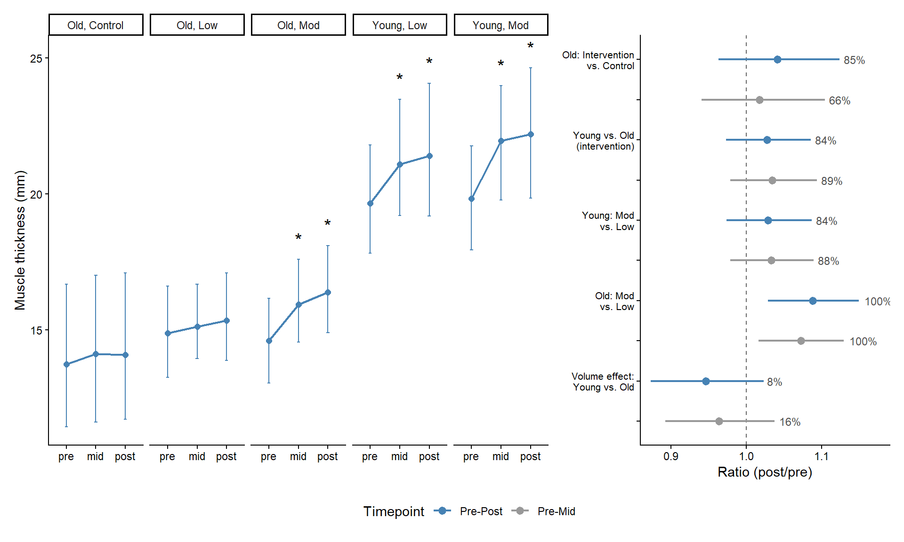
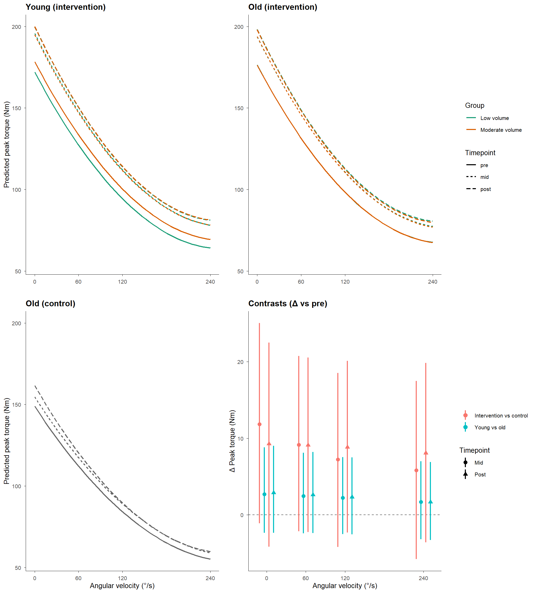
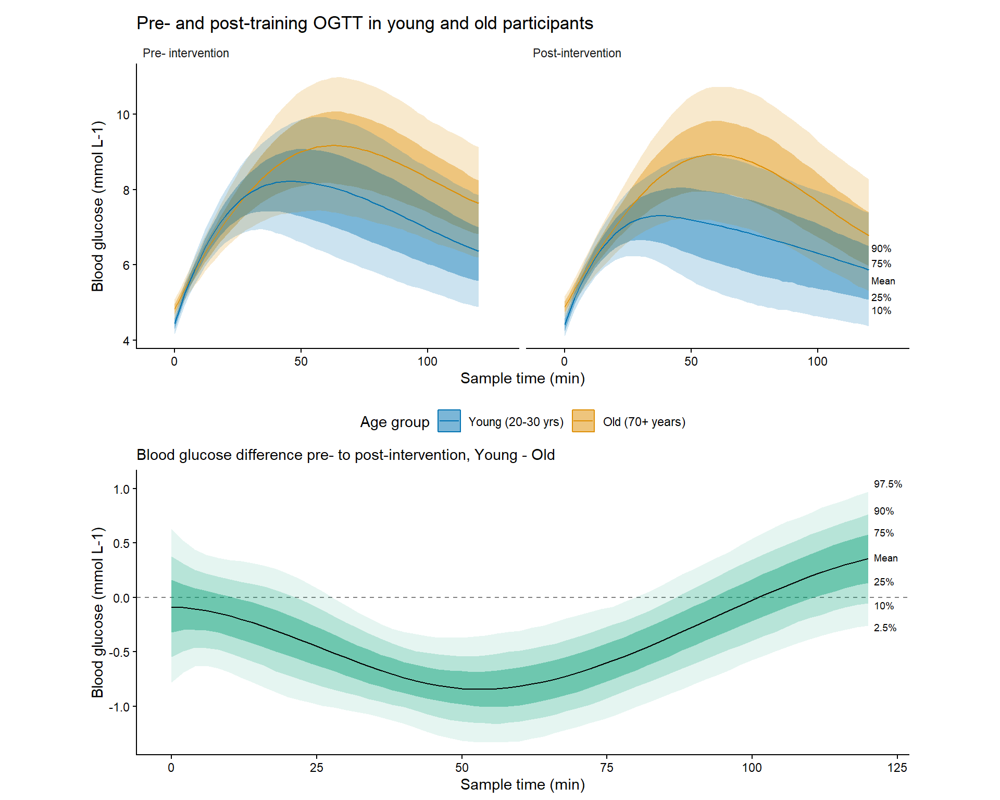
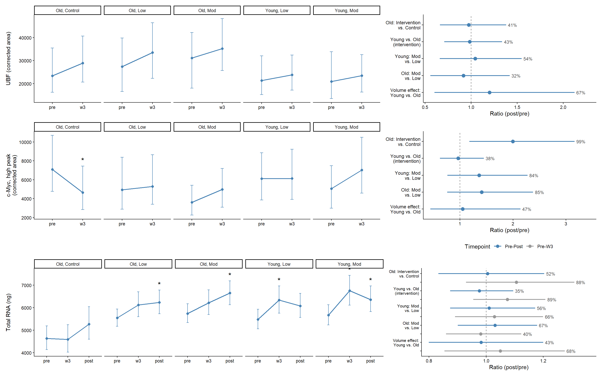
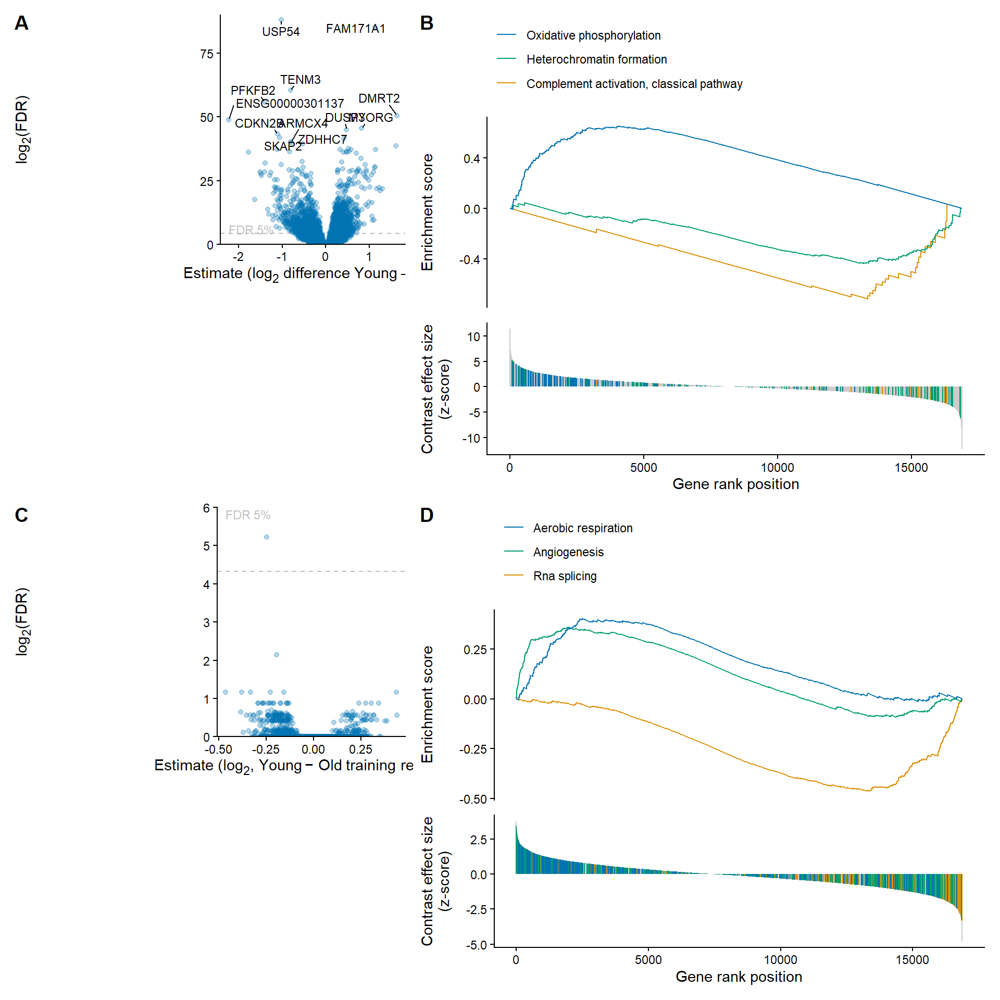

Results
Exercise Volume Load
Moderate volume exercise was estimated to ~2.8× higher than low in both age groups (young mod: 137438.7 ± 54491.7 kg, young low: 50693.5 ± 25707.7 kg, old mod: 118124.8 ± 38224.6 kg, old low: 42134.1 ± 14352.5 kg).
Skeletal Muscle Hypertrophy
Thigh Muscle Volume Older adults in the intervention group (averaged across volume conditions) increased muscle volume by 3.7% (95% CI [1.8%, 5.8%], P(>0) > 99.9%), while there was no evidence of a change in the control group (0.0%, 95% CI [−3.0%, 3.1%], P(<0) = 50.0%). The difference between them was 3.8% (95% CI [0.0%, 7.6%], P(>0) = 97.6%). Young adults (averaged across volume conditions) increased by 6.0% (95% CI [3.9%, 8.1%], P(>0) > 99.9%), likely more than older adults, although the 95% CI included zero (2.2%, 95% CI [−0.5%, 5.0%], P(>0) = 94.0%). Within young adults, low-volume training increased muscle volume by 5.0% (95% CI [2.9%, 7.2%], P(>0) > 99.9%) and moderate-volume training by 7.0% (95% CI [4.9%, 9.2%], P(>0) > 99.9%), with a larger increase under moderate volume (1.9%, 95% CI [0.9%, 2.8%], P(>0) > 99.9%). In older adults, low-volume training increased muscle volume by 2.9% (95% CI [1.0%, 5.0%], P(>0) = 99.9%) and moderate-volume training by 4.6% (95% CI [2.6%, 6.6%], P(>0) > 99.9%), again with a larger increase under moderate volume (1.6%, 95% CI [0.6%, 2.5%], P(>0) = 99.9%). There was no evidence that the volume effect differed between age groups (0.3%, 95% CI [−1.0%, 1.6%], P(>0) = 68.5%).

M. Vastus Lateralis Thickness Older adults in the intervention group (averaged across volume conditions) increased muscle thickness by 7.6% from baseline to post (95% CI [3.5%, 11.9%], P(>0) > 99.9%), while there was only weak evidence of an increase in the control group (3.4%, 95% CI [−3.3%, 10.5%], P(>0) = 83.4%). There was also only weak evidence of a difference between them (4.2%, 95% CI [−3.7%, 12.4%], P(>0) = 84.8%). By the half-way point, the intervention group had increased by 5.3% (95% CI [1.2%, 9.4%], P(>0) = 99.7%), with weak evidence of an increase in the control group (3.6%, 95% CI [−3.7%, 11.0%], P(>0) = 82.7%) and no evidence of a difference between them (1.8%, 95% CI [−5.9%, 10.4%], P(>0) = 66.0%). Young adults (averaged across volume conditions) increased by 10.5% (95% CI [6.5%, 14.9%], P(>0) > 99.9%), with weak evidence of a larger increase than in older adults (2.8%, 95% CI [−2.7%, 8.6%], P(>0) = 83.8%). The same was true at the half-way point (young: 8.9%, 95% CI [4.7%, 13.2%], P(>0) > 99.9%; difference: 3.5%, 95% CI [−2.1%, 9.4%], P(>0) = 88.7%). Within young adults, low-volume training increased muscle thickness by 9.0% (95% CI [3.8%, 14.2%], P(>0) > 99.9%) and moderate-volume training by 12.1% (95% CI [7.0%, 17.5%], P(>0) > 99.9%), with weak evidence of a larger increase under moderate volume (2.9%, 95% CI [−2.6%, 8.7%], P(>0) = 83.9%). In older adults, moderate-volume training increased muscle thickness by 12.2% (95% CI [6.7%, 17.7%], P(>0) > 99.9%), whereas there was only weak evidence of an increase with low-volume training (3.2%, 95% CI [−1.8%, 8.2%], P(>0) = 89.8%). The increase was larger under moderate volume (8.8%, 95% CI [2.9%, 14.9%], P(>0) = 99.8%). The same pattern was present at the half-way point, with weak evidence of a larger increase under moderate volume in young adults (3.3%, 95% CI [−2.1%, 8.9%], P(>0) = 88.4%) and a larger increase under moderate volume in older adults (7.3%, 95% CI [1.6%, 13.0%], P(>0) = 99.7%). The volume effect was likely larger in older than in young adults at post, although the 95% CI included zero (−5.4%, 95% CI [−12.7%, 2.4%], P(<0) = 91.9%), with weak evidence at the half-way point (−3.6%, 95% CI [−10.7%, 3.8%], P(<0) = 84.0%).

Upper body lean mass Older adults in the intervention group (averaged across volume conditions) tended to increase upper-body lean mass by 1.2% from baseline to post (95% CI [−0.3%, 2.7%], P(>0) = 93.4%). There was no evidence of a change in the control group (0.8%, 95% CI [−1.9%, 3.6%], P(>0) = 72.8%) and no evidence of a difference between the groups (0.3%, 95% CI [−2.8%, 3.5%], P(>0) = 57.8%). At the half-way point, there was weak evidence of an increase in the intervention group (0.7%, 95% CI [−0.5%, 2.0%], P(>0) = 86.8%) and weak evidence of a decrease in the control group (−0.8%, 95% CI [−3.1%, 1.6%], P(<0) = 75.6%), with weak evidence of a difference between them (1.6%, 95% CI [−1.1%, 4.3%], P(>0) = 87.8%). Young adults (averaged across volume conditions) increased upper-body lean mass by 3.1% (95% CI [1.5%, 4.8%], P(>0) > 99.9%), likely more than older adults, although the 95% CI included zero (1.9%, 95% CI [−0.2%, 4.2%], P(>0) = 95.5%). At the half-way point, young adults tended to have increased (1.3%, 95% CI [−0.1%, 2.7%], P(>0) = 96.6%), with no evidence of a difference from older adults (0.6%, 95% CI [−1.3%, 2.5%], P(>0) = 74.1%). Within young adults, low-volume training increased upper-body lean mass by 3.3% (95% CI [1.3%, 5.3%], P(>0) > 99.9%) and moderate-volume training by 2.9% (95% CI [0.9%, 4.9%], P(>0) = 99.8%), with no evidence of a difference between them (−0.4%, 95% CI [−2.7%, 1.9%], P(<0) = 63.1%). In older adults, there was weak evidence of an increase with low-volume training (1.1%, 95% CI [−0.7%, 3.0%], P(>0) = 89.4%), and moderate-volume training likely increased it (1.2%, 95% CI [−0.6%, 3.1%], P(>0) = 90.0%), with no evidence of a difference between them (0.1%, 95% CI [−1.9%, 2.2%], P(>0) = 52.0%). There was no evidence of a volume difference at the half-way point in either young (−0.2%, 95% CI [−2.5%, 2.0%], P(<0) = 57.5%) or older adults (−0.6%, 95% CI [−2.7%, 1.4%], P(<0) = 71.8%). There was also no evidence that the volume effect differed between age groups (half-way point: 0.4%, 95% CI [−2.6%, 3.6%], P(>0) = 59.5%; post: −0.4%, 95% CI [−3.4%, 2.6%], P(<0) = 61.6%).
Skeletal Muscle Strength

Isometric Force and Isometrick Peak Torque In older adults, peak torque in the intervention group (averaged across volume conditions) increased by 12.4%–19.0% from baseline to post, with larger increases at faster angular velocities (isometric: 12.4%, 95% CI [9.1%, 16.1%], P(>0) > 99.9%; 60°/s: 13.2%, 95% CI [9.3%, 17.5%], P(>0) > 99.9%; 120°/s: 14.6%, 95% CI [9.4%, 20.3%], P(>0) > 99.9%; 240°/s: 19.0%, 95% CI [11.0%, 27.6%], P(>0) > 99.9%). The control group also tended to increase (6.8%–9.2%), although the 95% CI excluded zero only for isometric torque (isometric: 8.6%, 95% CI [0.3%, 17.7%], P(>0) = 97.8%; 60°/s: 7.5%, 95% CI [−1.8%, 17.8%], P(>0) = 94.1%; 120°/s: 6.8%, 95% CI [−5.3%, 20.7%], P(>0) = 85.4%; 240°/s: 9.2%, 95% CI [−10.1%, 32.4%], P(>0) = 80.9%). There was only weak evidence that the intervention group increased more than the control group (3.7%–10.1%; isometric: 3.7%, 95% CI [−5.1%, 12.7%], P(>0) = 79.2%; 60°/s: 5.5%, 95% CI [−4.6%, 16.1%], P(>0) = 85.3%; 120°/s: 7.7%, 95% CI [−5.7%, 21.9%], P(>0) = 86.3%; 240°/s: 10.1%, 95% CI [−11.2%, 33.9%], P(>0) = 81.0%). By the half-way point, the intervention group had already increased by 9.9%–14.4% (isometric: 9.9%, 95% CI [6.6%, 13.4%], P(>0) > 99.9%; 60°/s: 11.0%, 95% CI [7.1%, 15.2%], P(>0) > 99.9%; 120°/s: 12.4%, 95% CI [7.2%, 17.9%], P(>0) > 99.9%; 240°/s: 14.4%, 95% CI [6.7%, 22.4%], P(>0) > 99.9%), whereas there was only weak evidence of a change in the control group (3.9%–7.6%; isometric: 3.9%, 95% CI [−4.1%, 12.4%], P(>0) = 82.4%; 60°/s: 4.9%, 95% CI [−4.4%, 14.9%], P(>0) = 85.1%; 120°/s: 6.1%, 95% CI [−5.9%, 19.9%], P(>0) = 83.4%; 240°/s: 7.6%, 95% CI [−11.2%, 30.3%], P(>0) = 76.5%). The intervention–control difference at this point (6.0%–7.3%) tended to favour the intervention for isometric torque, with weak or no evidence at faster velocities (isometric: 6.0%, 95% CI [−2.7%, 15.4%], P(>0) = 90.8%; 60°/s: 6.1%, 95% CI [−4.1%, 17.0%], P(>0) = 88.2%; 120°/s: 6.3%, 95% CI [−7.0%, 20.4%], P(>0) = 82.8%; 240°/s: 7.3%, 95% CI [−13.2%, 30.5%], P(>0) = 74.8%).
Young adults (averaged across volume conditions) increased peak torque by 14.2%–21.8% (isometric: 14.2%, 95% CI [10.7%, 18.0%], P(>0) > 99.9%; 60°/s: 15.4%, 95% CI [11.1%, 19.9%], P(>0) > 99.9%; 120°/s: 17.2%, 95% CI [11.6%, 23.2%], P(>0) > 99.9%; 240°/s: 21.8%, 95% CI [13.2%, 30.9%], P(>0) > 99.9%). There was only weak evidence that this increase was larger than in older adults (1.6%–2.5%; isometric: 1.6%, 95% CI [−1.2%, 5.0%], P(>0) = 84.7%; 60°/s: 1.9%, 95% CI [−1.7%, 6.0%], P(>0) = 83.9%; 120°/s: 2.3%, 95% CI [−2.4%, 7.5%], P(>0) = 82.4%; 240°/s: 2.5%, 95% CI [−4.4%, 10.1%], P(>0) = 75.2%). The pattern was similar at the half-way point, where young adults had increased by 11.6%–17.2% (isometric: 11.6%, 95% CI [8.2%, 15.2%], P(>0) > 99.9%; 60°/s: 13.1%, 95% CI [9.0%, 17.5%], P(>0) > 99.9%; 120°/s: 14.9%, 95% CI [9.5%, 20.6%], P(>0) > 99.9%; 240°/s: 17.2%, 95% CI [9.1%, 25.9%], P(>0) > 99.9%), with weak evidence of a larger increase than in older adults (1.5%–2.5%; isometric: 1.5%, 95% CI [−1.3%, 4.9%], P(>0) = 83.9%; 60°/s: 1.8%, 95% CI [−1.7%, 6.1%], P(>0) = 83.0%; 120°/s: 2.2%, 95% CI [−2.4%, 7.5%], P(>0) = 81.9%; 240°/s: 2.5%, 95% CI [−4.3%, 10.3%], P(>0) = 76.1%). The age difference was confined to the low-volume condition. At the half-way point, young adults’ low-volume increase was larger than older adults’ at isometric, 60°/s and 120°/s (3.6%–5.6%; isometric: 3.6%, 95% CI [0.3%, 7.9%], P(>0) = 98.3%; 60°/s: 4.6%, 95% CI [0.2%, 9.7%], P(>0) = 98.0%; 120°/s: 5.6%, 95% CI [0.1%, 12.1%], P(>0) = 97.7%), and likely larger at 240°/s (6.4%, 95% CI [−2.5%, 16.5%], P(>0) = 92.0%). By post, these differences remained likely, although all 95% CIs included zero (3.3%–6.1%; isometric: 3.3%, 95% CI [−0.1%, 7.4%], P(>0) = 97.1%; 60°/s: 4.2%, 95% CI [−0.2%, 9.1%], P(>0) = 97.0%; 120°/s: 5.2%, 95% CI [−0.4%, 11.4%], P(>0) = 96.6%; 240°/s: 6.1%, 95% CI [−2.5%, 15.8%], P(>0) = 91.5%). Under moderate volume, there was no evidence of an age difference at either time point (−1.2% to −0.1%, P(<0) ≤ 66.8%).
Within young adults, peak torque increased under both low volume (16.2%–26.7%; isometric: 16.2%, 95% CI [12.2%, 20.5%], P(>0) > 99.9%; 60°/s: 18.1%, 95% CI [13.3%, 23.2%], P(>0) > 99.9%; 120°/s: 20.8%, 95% CI [14.4%, 27.6%], P(>0) > 99.9%; 240°/s: 26.7%, 95% CI [16.7%, 37.7%], P(>0) > 99.9%) and moderate volume (12.2%–17.2%; isometric: 12.2%, 95% CI [8.6%, 16.0%], P(>0) > 99.9%; 60°/s: 12.8%, 95% CI [8.4%, 17.3%], P(>0) > 99.9%; 120°/s: 13.8%, 95% CI [8.1%, 19.8%], P(>0) > 99.9%; 240°/s: 17.2%, 95% CI [8.3%, 26.4%], P(>0) > 99.9%). The increase was smaller under moderate volume at every angular velocity (moderate vs. low: isometric: −3.4%, 95% CI [−6.0%, −1.1%], P(<0) = 99.8%; 60°/s: −4.5%, 95% CI [−7.3%, −1.6%], P(<0) = 99.9%; 120°/s: −5.7%, 95% CI [−9.4%, −2.2%], P(<0) > 99.9%; 240°/s: −7.4%, 95% CI [−13.7%, −1.2%], P(<0) = 98.8%), and this difference was already present at the half-way point (isometric: −4.0%, 95% CI [−6.6%, −1.6%], P(<0) > 99.9%; 60°/s: −5.1%, 95% CI [−8.1%, −2.2%], P(<0) > 99.9%; 120°/s: −6.3%, 95% CI [−10.0%, −2.8%], P(<0) > 99.9%; 240°/s: −7.5%, 95% CI [−13.9%, −0.8%], P(<0) = 98.5%). In older adults, low- and moderate-volume training produced similar increases (low: 12.5%–19.5%; isometric: 12.5%, 95% CI [9.0%, 16.3%], P(>0) > 99.9%; 60°/s: 13.4%, 95% CI [9.1%, 17.9%], P(>0) > 99.9%; 120°/s: 14.9%, 95% CI [9.3%, 20.8%], P(>0) > 99.9%; 240°/s: 19.5%, 95% CI [10.8%, 28.9%], P(>0) > 99.9%; moderate: 12.3%–18.5%; isometric: 12.3%, 95% CI [8.8%, 16.1%], P(>0) > 99.9%; 60°/s: 13.1%, 95% CI [8.9%, 17.5%], P(>0) > 99.9%; 120°/s: 14.4%, 95% CI [8.9%, 20.3%], P(>0) > 99.9%; 240°/s: 18.5%, 95% CI [10.1%, 27.9%], P(>0) > 99.9%). There was no evidence of a difference between them at any angular velocity, either at post (isometric: −0.2%, 95% CI [−2.3%, 2.0%], P(<0) = 56.7%; 60°/s: −0.3%, 95% CI [−2.9%, 2.3%], P(<0) = 58.6%; 120°/s: −0.4%, 95% CI [−3.7%, 2.9%], P(<0) = 60.3%; 240°/s: −0.7%, 95% CI [−6.4%, 5.1%], P(<0) = 60.3%) or at the half-way point (isometric: 0.1%, 95% CI [−1.9%, 2.3%], P(>0) = 54.5%; 60°/s: 0.1%, 95% CI [−2.4%, 2.7%], P(>0) = 52.3%; 120°/s: 0.0%, 95% CI [−3.2%, 3.3%], P(<0) = 50.8%; 240°/s: −0.5%, 95% CI [−6.4%, 5.5%], P(<0) = 56.4%).
The volume effect (moderate vs. low) differed between age groups at isometric, 60°/s and 120°/s. Relative to low volume, moderate volume was less favourable in young than in older adults, both at post (isometric: −3.3%, 95% CI [−6.5%, −0.2%], P(<0) = 98.2%; 60°/s: −4.2%, 95% CI [−8.1%, −0.4%], P(<0) = 98.5%; 120°/s: −5.3%, 95% CI [−10.1%, −0.5%], P(<0) = 98.4%) and at the half-way point (isometric: −4.1%, 95% CI [−7.5%, −1.1%], P(<0) = 99.6%; 60°/s: −5.1%, 95% CI [−9.0%, −1.4%], P(<0) = 99.6%; 120°/s: −6.3%, 95% CI [−11.0%, −1.5%], P(<0) = 99.6%). At 240°/s the difference was likely, although the 95% CI included zero (post: −6.7%, 95% CI [−14.8%, 2.0%], P(<0) = 94.1%; half-way: −7.0%, 95% CI [−15.2%, 2.1%], P(<0) = 94.3%).

1-Repetition Maximum Leg Press Older adults in the intervention group (averaged across volume conditions) increased 1RM leg press by 13.1% from baseline to post (95% CI [8.6%, 17.5%], P(>0) > 99.9%). The control group increased by a similar amount (11.9%, 95% CI [4.1%, 20.2%], P(>0) = 99.8%), and there was no evidence of a difference between them (1.2%, 95% CI [−6.8%, 9.7%], P(>0) = 60.6%). Both groups had already increased by the half-way point (intervention: 9.7%, 95% CI [6.1%, 13.4%], P(>0) > 99.9%; control: 7.2%, 95% CI [0.7%, 14.2%], P(>0) = 98.3%), again with no evidence of a difference (2.4%, 95% CI [−5.0%, 10.1%], P(>0) = 73.7%). Young adults (averaged across volume conditions) increased by 12.9% (95% CI [8.3%, 17.5%], P(>0) > 99.9%), with no evidence of a difference from older adults (−0.1%, 95% CI [−5.7%, 5.8%], P(<0) = 52.6%). The same held at the half-way point (young: 9.6%, 95% CI [5.7%, 13.6%], P(>0) > 99.9%; difference: −0.1%, 95% CI [−4.9%, 5.0%], P(<0) = 52.4%). Within young adults, low- and moderate-volume training increased 1RM by 12.2% (95% CI [7.1%, 17.5%], P(>0) > 99.9%) and 13.7% (95% CI [8.4%, 19.0%], P(>0) > 99.9%), respectively, with no evidence of a difference between them (1.3%, 95% CI [−3.2%, 6.0%], P(>0) = 70.4%). In older adults, low- and moderate-volume training increased 1RM by 13.0% (95% CI [8.0%, 18.1%], P(>0) > 99.9%) and 13.2% (95% CI [8.3%, 18.3%], P(>0) > 99.9%), respectively, again with no evidence of a difference (0.2%, 95% CI [−4.1%, 4.5%], P(>0) = 53.0%). At the half-way point, there was no evidence of a volume difference in young adults (0.4%, 95% CI [−4.1%, 4.9%], P(>0) = 56.5%) and only weak evidence in older adults (1.6%, 95% CI [−2.6%, 6.1%], P(>0) = 76.3%). There was no evidence that the volume effect differed between age groups, either at the half-way point (−1.1%, 95% CI [−7.1%, 4.9%], P(<0) = 65.4%) or at post (1.2%, 95% CI [−4.9%, 7.5%], P(>0) = 64.3%).

Bicep Curl Force Developement Older adults in the intervention group (averaged across volume conditions) increased bicep curl MVC by 5.3% from baseline to post (95% CI [1.6%, 9.1%], P(>0) = 99.8%), while the control group decreased (−8.0%, 95% CI [−14.2%, −1.9%], P(<0) = 99.3%). The resulting difference between groups (14.6%, 95% CI [6.2%, 23.6%], P(>0) > 99.9%) was already present at the half-way point (14.1%, 95% CI [6.0%, 22.9%], P(>0) = 99.9%), likely driven mainly by the control group’s decline (−11.0%, 95% CI [−16.7%, −5.1%], P(<0) > 99.9%) rather than by a change in the intervention group, for which there was only weak evidence of an increase at that point (1.5%, 95% CI [−2.1%, 5.1%], P(>0) = 78.6%). Young adults (averaged across volume conditions) tended to increase by 3.8% (95% CI [−0.2%, 7.8%], P(>0) = 96.9%), with no evidence of a difference from older adults (−1.4%, 95% CI [−6.5%, 3.9%], P(<0) = 71.1%). At the half-way point, young adults tended to have increased by a similar amount (3.8%, 95% CI [−0.1%, 7.7%], P(>0) = 97.2%), with weak evidence of a larger increase than in older adults (2.3%, 95% CI [−2.9%, 7.8%], P(>0) = 80.3%). Within young adults, low-volume training increased MVC by 6.4% (95% CI [1.2%, 11.8%], P(>0) = 99.0%), whereas there was no evidence of an increase with moderate-volume training (1.3%, 95% CI [−4.0%, 6.5%], P(>0) = 68.5%); the increase was likely smaller under moderate volume, although the 95% CI included zero (moderate vs. low: −4.8%, 95% CI [−11.2%, 1.7%], P(<0) = 92.4%). In older adults, moderate-volume training increased MVC by 6.5% (95% CI [1.3%, 11.7%], P(>0) = 99.3%), and low-volume training tended to increase it by 4.2% (95% CI [−0.7%, 9.3%], P(>0) = 94.8%), with no evidence of a difference between them (2.3%, 95% CI [−4.2%, 9.1%], P(>0) = 74.7%). At the half-way point, there was weak evidence of a smaller increase under moderate volume in young adults (−3.3%, 95% CI [−9.6%, 3.4%], P(<0) = 84.2%) and no evidence of a volume difference in older adults (1.5%, 95% CI [−4.8%, 8.4%], P(>0) = 67.2%). The volume effect was likely less favourable to moderate volume in young than in older adults at post, although the 95% CI included zero (−6.8%, 95% CI [−15.1%, 2.2%], P(<0) = 93.2%), with weak evidence at the half-way point (−4.7%, 95% CI [−13.2%, 4.6%], P(<0) = 85.0%).
Oral Glucose Tolerance Test

The intervention group showed a credible reduction in glucose response in older adults relative to control, beginning at 38 minutes post-ingestion and persisting through the end of the sampling window (mean difference at 120 min = −0.73 mmol/L, 95% CI [−1.48, −0.02], pos = 97.7%; pos = 97.5% at 38 min), with old intervention participants showing a lower post-training glucose response than old controls throughout this period. Young adults showed a greater training-induced reduction in glucose than old adults across part of the sampling window: the young vs. old difference was credible between 30 and 78 minutes post-ingestion (pos = 98.6% and 98.2% at the window boundaries), with the largest divergence at 54 minutes (−0.85 mmol/L, 95% CI [−1.34, −0.36], pos = 100%). Outside this window the difference was not credible: before 30 min the point estimate trended in the same direction but pos remained well below the credible threshold, and after 78 min the point estimate briefly crossed to the opposite sign, consistent with the age-related difference no longer being detectable by the end of the 2 h window.
Molecular

UBF Protein Older adults in the intervention group (averaged across volume conditions) tended to increase UBF protein content by week 3 (19.1%, 95% CI [−7.0%, 49.0%], P(>0) = 90.1%), as did the control group (24.9%, 95% CI [−15.7%, 64.3%], P(>0) = 90.8%), with no evidence of a difference between them (−2.6%, 95% CI [−33.7%, 38.1%], P(<0) = 58.6%). There was weak evidence of an increase in young adults (averaged across volume conditions; 15.7%, 95% CI [−8.0%, 44.2%], P(>0) = 88.5%), with no evidence of a difference from older adults (−1.5%, 95% CI [−29.0%, 33.8%], P(<0) = 56.8%). Within young adults, there was weak evidence of an increase with both low-volume (15.2%, 95% CI [−18.7%, 52.5%], P(>0) = 80.8%) and moderate-volume training (17.6%, 95% CI [−15.2%, 60.7%], P(>0) = 83.2%), with no evidence of a difference between them (4.4%, 95% CI [−34.0%, 54.8%], P(>0) = 53.9%). In older adults, there was weak evidence of an increase with low-volume training (27.1%, 95% CI [−13.3%, 74.7%], P(>0) = 88.9%) and no evidence with moderate-volume training (13.1%, 95% CI [−18.8%, 55.0%], P(>0) = 74.9%), again with no evidence of a difference between them (−8.2%, 95% CI [−44.1%, 41.9%], P(<0) = 67.8%). There was no evidence that the volume effect differed between age groups (20.1%, 95% CI [−39.8%, 112.3%], P(>0) = 67.2%).
c-Myc Protein The difference in c-Myc (high peak) protein content between the old intervention group (averaged across volume conditions) and the control group was large by week 3 (99.8%, 95% CI [17.5%, 216.3%], P(>0) = 99.3%). This difference was driven mainly by a decrease in the control group (−34.5%, 95% CI [−56.0%, −5.5%], P(<0) = 98.6%), while the intervention group tended to increase (25.9%, 95% CI [−8.9%, 68.1%], P(>0) = 92.0%). There was weak evidence of an increase in young adults (averaged across volume conditions; 18.6%, 95% CI [−12.5%, 57.5%], P(>0) = 85.9%), with no evidence of a difference from older adults (−3.5%, 95% CI [−37.8%, 45.0%], P(<0) = 61.5%). Within young adults, there was no evidence of a change with low-volume training (4.4%, 95% CI [−30.1%, 49.1%], P(>0) = 55.2%), while moderate-volume training tended to increase c-Myc (37.3%, 95% CI [−12.2%, 106.2%], P(>0) = 91.5%). There was weak evidence of a larger increase under moderate volume (36.2%, 95% CI [−23.8%, 127.4%], P(>0) = 83.5%). The same pattern held in older adults: there was no evidence of a change with low-volume training (9.6%, 95% CI [−29.9%, 64.4%], P(>0) = 62.0%), moderate-volume training tended to increase c-Myc (47.9%, 95% CI [−4.7%, 118.4%], P(>0) = 95.5%), and there was weak evidence of a larger increase under moderate volume (41.0%, 95% CI [−24.3%, 138.0%], P(>0) = 84.5%). There was no evidence that the volume effect differed between age groups (5.2%, 95% CI [−55.8%, 114.3%], P(>0) = 46.7%).
Total RNA Older adults in the intervention group (averaged across volume conditions) increased RNA yield by 14.1% from baseline to post (95% CI [5.3%, 23.5%], P(>0) = 99.9%). The control group tended to increase by a similar amount (13.5%, 95% CI [−4.1%, 34.2%], P(>0) = 93.2%), and there was no evidence of a difference between them (0.5%, 95% CI [−16.7%, 20.3%], P(>0) = 52.4%). The two groups differed in timing: the intervention group had already increased by week 3 (9.2%, 95% CI [1.2%, 18.2%], P(>0) = 98.6%), whereas the control group had not changed at that point (−0.9%, 95% CI [−15.1%, 15.2%], P(<0) = 55.0%). The difference between them at week 3 was still uncertain (10.6%, 95% CI [−7.0%, 30.8%], P(>0) = 87.6%). Young adults (averaged across volume conditions) increased by 11.6% by post (95% CI [2.6%, 21.4%], P(>0) = 99.6%), with no evidence of a difference from older adults (−2.4%, 95% CI [−12.6%, 9.5%], P(<0) = 65.3%). At week 3, however, young adults had increased by 17.4% (95% CI [7.8%, 28.0%], P(>0) > 99.9%), with weak evidence of a larger increase than older adults (7.4%, 95% CI [−4.5%, 20.8%], P(>0) = 88.9%). Between week 3 and post, young adults’ RNA yield likely fell back relative to older adults’ (−9.0%, 95% CI [−20.4%, 4.5%], P(<0) = 91.9%). Within young adults, both low-volume (15.7%, 95% CI [3.5%, 29.5%], P(>0) = 99.5%) and moderate-volume training (19.2%, 95% CI [6.4%, 33.5%], P(>0) = 99.9%) increased RNA yield by week 3. At post, the increase was 12.2% under moderate volume (95% CI [0.4%, 25.9%], P(>0) = 97.8%), while low volume tended to increase it by 10.8% (95% CI [−0.7%, 24.1%], P(>0) = 96.6%). There was no evidence of a difference between volume conditions at either time point (week 3: 2.9%, 95% CI [−10.8%, 19.9%], P(>0) = 65.7%; post: 1.1%, 95% CI [−12.6%, 17.1%], P(>0) = 56.0%). In older adults, low-volume (12.3%, 95% CI [1.0%, 24.6%], P(>0) = 98.3%) and moderate-volume training (15.8%, 95% CI [4.4%, 28.3%], P(>0) = 99.8%) both increased RNA yield by post, having tended to increase already by week 3 (low: 10.3%, 95% CI [−0.3%, 22.0%], P(>0) = 97.1%; moderate: 8.3%, 95% CI [−2.3%, 19.9%], P(>0) = 93.3%). There was no evidence of a difference between volume conditions at either time point (week 3: −1.9%, 95% CI [−14.0%, 12.3%], P(<0) = 60.4%; post: 3.1%, 95% CI [−9.9%, 17.8%], P(>0) = 67.2%). There was no evidence that the volume effect differed between age groups, either at week 3 (5.0%, 95% CI [−14.6%, 27.5%], P(>0) = 68.4%) or at post (−1.7%, 95% CI [−20.0%, 20.0%], P(<0) = 57.2%).
RNA-sequencing

Comparing gene-expression profiles between age groups at baseline (Young − Old) revealed marked differences, with 2082 genes showing robust differences between the groups (FDR < 5%, Fig 6A/B). Rank-based gene-set enrichment analysis (Xu et al. 2024) indicated that young participants had relatively higher expression of genes related to aerobic energy metabolism (oxidative phosphorylation) and relatively lower expression of genes related to immune system activation (complement activation, classical pathway) and epigenetic regulation of gene expression (heterochromatin formation). Training induced a large, broad transcriptional response in both age groups: 3503 genes changed from baseline to post in young participants, and 4241 in old participants (FDR < 5%, Fig 6C/D). Individual genes with the strongest training-induced changes were predominantly collagen and basement-membrane genes in both groups (e.g., COL4A1, COL4A2, LAMB1, PXDN in young; COL4A1, LAMA4, COL3A1, COL1A2, SPARC in old).
Rank-based gene-set enrichment analysis (Xu et al. 2024) showed that the dominant biology of the training response was similar between age groups: 6 of the top 10 enriched categories were shared, with matching direction and comparable magnitude in both young and old (RNA splicing, ribonucleoprotein complex biogenesis, integrin-mediated signaling pathway, cell adhesion mediated by integrin, collagen metabolic process, and mRNA transport). Training up-regulated genes related to ECM/connective tissue remodeling (e.g., integrin-mediated signaling and adhesion, collagen metabolic process) and down-regulated genes related to RNA-processing and ribosome biogenesis (e.g., RNA splicing, ribonucleoprotein complex biogenesis, mRNA transport) in both groups. While essentially no genes (1 gene at 5% and 0 at 1%) showed a statistically significant age-dependent training response after FDR correction, gene-set enrichment analysis of the age × time interaction contrast revealed that the magnitude of the shared training response differed somewhat between age groups in specific processes: the down-regulation of RNA splicing and related mRNA-processing categories was more pronounced in young than old, while the up-regulation of angiogenesis and aerobic respiration/cellular respiration categories was more pronounced in young than old.
A smaller set of categories differed by age: young participants showed additional enrichment for cytoplasmic translation, mesenchymal cell migration, and angiogenesis, while old participants showed additional enrichment for coagulation- and vascular-related categories. In contrast to the broadly age-independent training effect, the effect of training volume (moderate vs. low) was age-dependent: a substantial number of genes differed by volume in old participants (1216 genes, FDR < 5%), while essentially no genes showed a volume effect in young participants. Among old participants, higher training volume was associated with relatively higher expression of genes related to mitochondrial biogenesis and oxidative metabolism (e.g., inner mitochondrial membrane organization, respiratory electron transport chain, purine-containing compound biosynthesis) and relatively lower expression of genes related to muscle contractile function and translation (e.g., skeletal muscle contraction, cytoplasmic translation, muscle organ development, striated muscle cell differentiation, ribosomal small subunit biogenesis). This volume effect was considerably more modest than the main training effect, both in the number of genes involved and in statistical strength.
References
Xu, Shuangbin, Erqiang Hu, Yantong Cai, Zijing Xie, Xiao Luo, Li Zhan, Wenli Tang, et al. 2024. “Using clusterProfiler to Characterize Multiomics Data.” Nature Protocols 19 (11): 3292–3320. https://doi.org/10.1038/s41596-024-01020-z.